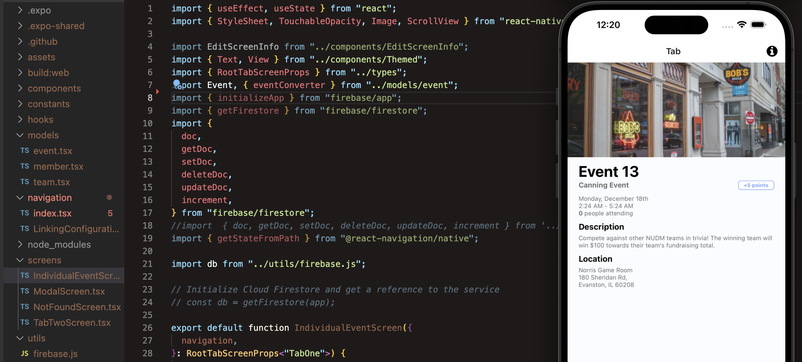

Hi, Ethan here!
About me
I'm a 3rd year student at Northwestern University majoring in Computer Science with a minor in Data Science.
One of my passions is thinking about the different software tools that could be developed to help augment learning. Over the summer, I worked on an interface for reading in a foreign language. Creating accessible and user focused software is something I really value.
I'm primarily interested in computer systems in school. Learning about and developing projects related to database intenerals, the internet, and operating systems has been fascinating to me.
Outside of class, I am learning how to boulder and I love to self-study Mandarin. I also enjoy playing piano and violin, both of which I have played for over a decade. Fun fact: I took these photos around my college campus!
Activities
Research Assistant, TIILT Lab
At the TIILT lab, I am designing a web application with the end goal of teaching music theory in a more interactive and engaging way. So far I've conducted interviews with professors at the Bienen School of Music as part of our user-centered design process. I'm also researching music information retrieval and brainstorming new ways to visualize aspects of theory.
NUDM Analytics Team
With NUDM, I'm developing a client facing mobile app which serves thousands of students. The app mainly involves an event management interface as well as a fundraising leaderboard. We are working with React Native (TypeScript), Redux, and Firebase in an Agile environment
DAQ Team, Northwestern Formula Racing
NU Formula Racing builds a car from scratch for competition in the collegiate Formula FSAE tournament. I've learnd a lot about the field of embedded systems in Formula. Specifically, I wrote and tested ESP32 firmware (C++) which sends onboard GPS and IMU sensor data via the car's CAN bus at a periodic rate. I also wrote a driver interfacing between the car's motor controller and various entities that wish to receive data and transmit requests